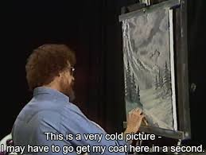

A Tidy Tuesday dessa semana traz um dataset sobre Bob Ross. Bob foi um pintor americano conhecido pelo programa The Joy of Painting, que foi ao ar nos anos 80 e 90 nos EUA, Canadá e Europa. No seu programa, ele mostrava técnicas de pintura a óleo enquanto completava uma pintura toda semana.
O dataset sobre o trabalho de Bob Ross foi fornecido para a #tidytuesday pelo site 538:
if (!require("pacman")) install.packages("pacman")
pacman::p_load(tidyverse, janitor)
bob_ross <- readr::read_csv("https://raw.githubusercontent.com/rfordatascience/tidytuesday/master/data/2019/2019-08-06/bob-ross.csv") %>%
clean_names()Em primeiro lugar, para ver o que temos nos dados, vamos usar a função head, que retorna as primeiras linhas da planilha:
bob_ross %>% head()## # A tibble: 6 x 69
## episode title apple_frame aurora_borealis barn beach boat bridge
## <chr> <chr> <dbl> <dbl> <dbl> <dbl> <dbl> <dbl>
## 1 S01E01 "\"A~ 0 0 0 0 0 0
## 2 S01E02 "\"M~ 0 0 0 0 0 0
## 3 S01E03 "\"E~ 0 0 0 0 0 0
## 4 S01E04 "\"W~ 0 0 0 0 0 0
## 5 S01E05 "\"Q~ 0 0 0 0 0 0
## 6 S01E06 "\"W~ 0 0 0 0 0 0
## # ... with 61 more variables: building <dbl>, bushes <dbl>, cabin <dbl>,
## # cactus <dbl>, circle_frame <dbl>, cirrus <dbl>, cliff <dbl>,
## # clouds <dbl>, conifer <dbl>, cumulus <dbl>, deciduous <dbl>,
## # diane_andre <dbl>, dock <dbl>, double_oval_frame <dbl>, farm <dbl>,
## # fence <dbl>, fire <dbl>, florida_frame <dbl>, flowers <dbl>,
## # fog <dbl>, framed <dbl>, grass <dbl>, guest <dbl>,
## # half_circle_frame <dbl>, half_oval_frame <dbl>, hills <dbl>,
## # lake <dbl>, lakes <dbl>, lighthouse <dbl>, mill <dbl>, moon <dbl>,
## # mountain <dbl>, mountains <dbl>, night <dbl>, ocean <dbl>,
## # oval_frame <dbl>, palm_trees <dbl>, path <dbl>, person <dbl>,
## # portrait <dbl>, rectangle_3d_frame <dbl>, rectangular_frame <dbl>,
## # river <dbl>, rocks <dbl>, seashell_frame <dbl>, snow <dbl>,
## # snowy_mountain <dbl>, split_frame <dbl>, steve_ross <dbl>,
## # structure <dbl>, sun <dbl>, tomb_frame <dbl>, tree <dbl>, trees <dbl>,
## # triple_frame <dbl>, waterfall <dbl>, waves <dbl>, windmill <dbl>,
## # window_frame <dbl>, winter <dbl>, wood_framed <dbl>Temos cada uma das 403 pinturas que Bob Ross fez ao longo dos 11 anos e 31 temporadas de The Joy of Painting, cada uma delas contendo os diversos elementos presentes em cada pintura: casas, barcos, palmeiras, árvores etc.
Para organizar um pouco a tabela, vamos usar a função gather, colocando os diversos elementos em uma única coluna e sua existência ou não como outra coluna. Vamos também separar episódio e temporada em colunas próprias, numéricas, usando algumas funções do pacote stringr e um pouquinho de regex.
bob_ross_gather <- bob_ross %>%
separate(episode, into = c("season", "episode"), sep = "E") %>%
mutate(season = str_extract(season, "[:digit:]+")) %>%
mutate_at(vars(season, episode), as.integer) %>%
gather(apple_frame:wood_framed, key = element, value = presence) %>%
print()## # A tibble: 27,001 x 5
## season episode title element presence
## <int> <int> <chr> <chr> <dbl>
## 1 1 1 "\"A WALK IN THE WOODS\"" apple_frame 0
## 2 1 2 "\"MT. MCKINLEY\"" apple_frame 0
## 3 1 3 "\"EBONY SUNSET\"" apple_frame 0
## 4 1 4 "\"WINTER MIST\"" apple_frame 0
## 5 1 5 "\"QUIET STREAM\"" apple_frame 0
## 6 1 6 "\"WINTER MOON\"" apple_frame 0
## 7 1 7 "\"AUTUMN MOUNTAINS\"" apple_frame 0
## 8 1 8 "\"PEACEFUL VALLEY\"" apple_frame 0
## 9 1 9 "\"SEASCAPE\"" apple_frame 0
## 10 1 10 "\"MOUNTAIN LAKE\"" apple_frame 0
## # ... with 26,991 more rowsAgora vamos ver quais são os elementos mais presentes nas pinturas e separar os 20 primeiros.
top_elements <- bob_ross_gather %>%
group_by(element) %>%
summarise(presence = sum(presence)) %>%
arrange(-presence) %>%
top_n(20, presence) %>%
mutate(element = factor(element, levels = element)) #transformando em factor para manter a ordem
top_elements %>%
ggplot(aes(x = element, y = presence)) +
geom_point(size=3) +
geom_segment(aes(x = element,
xend = element,
y = 0,
yend = presence)) +
labs(x = NULL,
y = "Nº de Pinturas",
title = "Elementos mais presentes nas pinturas de Bob Ross",
caption = "Fonte: Tidy Tuesday (https://github.com/rfordatascience/tidytuesday)") +
coord_flip() +
theme_bw()
Em primeiro lugar, chamam atenção as árvores: 89% de suas pinturas contém ao menos uma árvore, e quase 84% delas possuem mais de uma. Curiosidade: uma vez que Bob pintasse a primeira árvore, ele não pintava a segunda, ele pintava uma “amiga” da primeira. Os dois próximos elementos da lista tratam dos tipos de árvores pintadas, decíduas e coníferas. Para os leigos: árvores que perdem folhas no inverno e pinheiros.
Essa paisagem de coníferas e decíduas remete ao segundo tema mais constante da obra de Bob Ross, o inverno. Bob Ross ingressou na Força Aérea aos 17 anos (uma coisa que temos em comum). Diferente de mim, no entanto, ele continuou por lá, passando 20 anos na Base Aérea de Eielson, no Alasca. Isso parece ter permeado sua arte, uma vez que pinturas de áreas congeladas parece ter sido um trend em sua carreira. Montanhas nevadas, neve, inverno, são outros elementos constantes em sua obra.

Puxando para o meu lado florestal, separei manualmente todas as referências a elementos vegetais nas obras de Bob. Se deixei passar algum, me avisem:
veggies <- c("bushes", "cactus", "conifer", "deciduous",
"flowers", "grass","palm_trees", "tree", "trees")
bob_ross_veg <- bob_ross_gather %>%
filter(element %in% veggies)
bob_ross_veg %>%
group_by(element) %>%
summarise(presence = sum(presence)) %>%
arrange(-presence) %>%
mutate(element = factor(element, levels = element))%>%
ggplot(aes(x = element, y = presence)) +
geom_point(size=3) +
geom_segment(aes(x = element,
xend = element,
y = 0,
yend = presence)) +
labs(x = NULL,
y = "Nº de Pinturas",
title = "Elementos vegetais mais presentes nas pinturas de Bob Ross",
caption = "Fonte: Tidy Tuesday (https://github.com/rfordatascience/tidytuesday)") +
coord_flip() +
theme_bw()
Vamos dar uma olhada se algum desses elementos teve alguma grande alteração ao longo dos anos.
bob_ross_veg %>%
group_by(element, season) %>%
summarise(presence = sum(presence)) %>%
ungroup() %>%
ggplot(aes(x = season, y = presence)) +
geom_line(aes(color = element), show.legend = FALSE) +
geom_smooth(method = "lm", se = F, color = "lightgray") +
labs(x = NULL,
y = "Nº de Pinturas",
title = "Elementos vegetais mais presentes nas pinturas de Bob Ross ao longo do tempo",
caption = "Fonte: Tidy Tuesday (https://github.com/rfordatascience/tidytuesday)") +
facet_wrap(~element) +
theme_bw()
Aparentemente Bob Ross era bem consistente em suas pinturas. Também dá pra perceber a maior presença de plantas de climas mais frios (coníferas, decíduas) comparada à frequência daquelas de climas quentes (palmeiras, cactos). Isso continua nos mostrando como suas pinturas geralmente retratavam paisagens mais frias.
Dá pra notar uma diminuição do número de arbustos e árvores decíduas e um aumento das coníferas. Bob parece ter ido para climas ainda mais frios conforme o tempo passou!
Abraços!